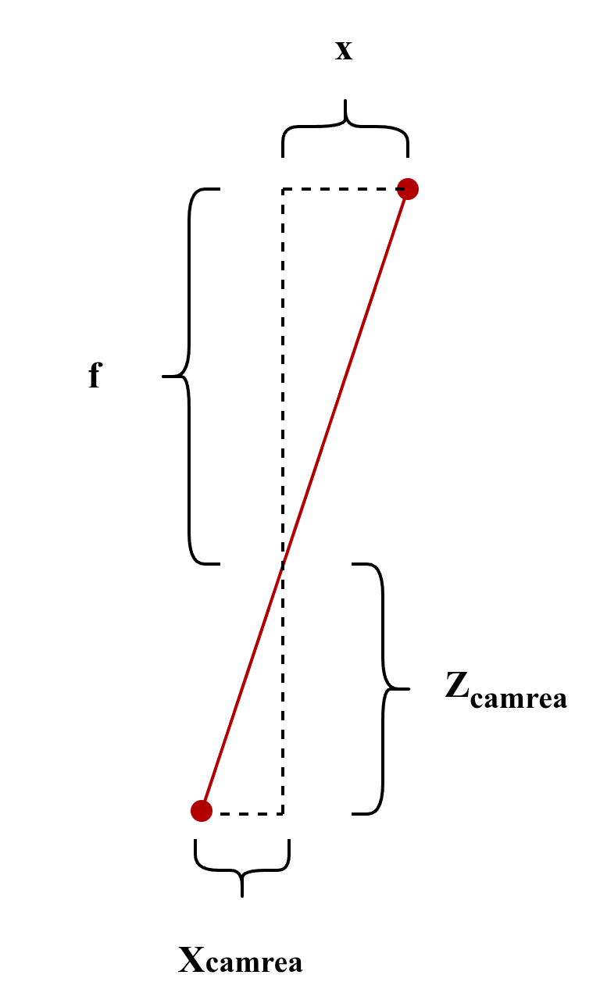
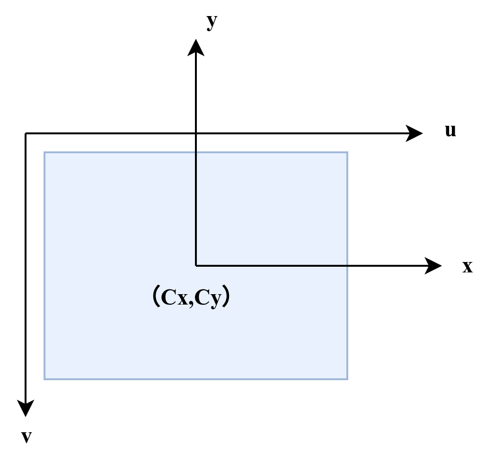

7.1 针孔相机模型
要介绍相机的成像原理，必须先讲清楚相机的成像模型。根据第六章中的内容，我们已经知道了在Bevy中坐标系的组成和变换公式，现在让我们做如下推理来看看相机到底是怎么成像的。
假设我们的世界坐标是,,，根据我们前面的知识，由屏幕内指向我们，指向正上方，与前二者组成右手坐标系(即朝右侧)，如下图所示。

假设我们的相机，在世界坐标系中的姿态(以方向余弦阵表示)和坐标表示为：和。根据我们前面的知识，对于空间中的一个在世界坐标系下的点，在相机坐标系中的坐标为，那么我们有：
根据相似三角形原理，通过透镜成像的几何关系，我们可以推导相机投影模型。

假设相机光心位于坐标原点，光轴与 轴重合。一个位于相机前方距离为 的点 ，经过焦距为 的透镜，在成像平面上形成点 。
根据几何相似关系，我们将成像平面放在光心前方（焦距 处），此时推导出的投影关系为：
这里的负号揭示了针孔相机的特性之一：倒立成像。根据几何光学的相似三角形，物体在成像平面上的投影相对于原物体是上下左右颠倒的。为了在数值处理上更符合直觉，我们通常会对投影结果再取一次负号（或者将成像平面定义在光心前方），从而将模型修正为正立的投影： 观察上面的式子，由于右侧存在除以 的操作，这在齐次坐标的线性矩阵乘法中是无法直接表示的。为了将其转化为矩阵运算，我们将方程两侧同时乘以 ：
现在，我们将这三个线性方程组合起来，就可以构建成一个矩阵乘法运算： 最后，我们将最开始的世界坐标系到相机坐标系的变换关系带入其中，并添加一个维度，可以得到世界坐标到成像平面的直接变换：
上述公式完整描述了 3D 世界点到 2D 成像平面的投影过程，其中包含两个核心矩阵和一个深度因子：
-
（内参矩阵）：
这是一个 的矩阵（实际上这个矩阵里还应该有两个 代表uv变换的参数，不过这个变换在图形学中用的极少，一般只用在计算机视觉中），它负责将 3D 相机坐标系下的点，按照焦距 投影到 2D 平面上。
-
（外参矩阵）：
这是一个 的矩阵，代表了相机在世界坐标系中的位姿。它通过旋转矩阵 和平移向量 ，将任何世界坐标系下的点转换到相机坐标系中。这是一个典型的World-To-Local变换。
-
（深度/归一化因子）：
这是公式中最特殊的部分。观察矩阵乘法的结果，你会发现左侧是一个三维向量，其中最后一个分量正好是 。在齐次坐标体系中，该分量代表了点在相机坐标系下的垂直深度。
这也是为什么我们需要在矩阵运算后执行**“透视除法”**：因为矩阵运算的结果左侧不是直接的 ，而是 。要得到最终的成像坐标 ，我们必须将前两个分量除以第三个分量 。
记得我们之前说过，Bevy中相机的-z轴是视野正前方，现在你能解释为什么了吗?
Note
观察第一幅图，如果你想要观察成像平面，你应该怎么看？这时候朝什么方向？
还是让我们来简单的再讲一下uv变换吧(不然总感觉不够完整)。
前面我们得到了成像平面内的坐标，但是在最后，我们还需要将成像平面的坐标 映射到图像的 像素坐标 。
在成像平面上，假设我们的成像平面坐标系的原点位于，通常这个点被称为像主点，而像素坐标系的原点位于图像的左上角这之间很明显差了一个平移和翻转。此外，还需要考虑物理单位与像素之间的缩放比例（）。

实际上在大多数的计算机视觉领域中，由于一开始采用的y并不是竖直朝上，而是竖直朝下的右手坐标系，因此不存在这个翻转y轴的问题。
这里我们也以不需要翻转y轴的情况为例。设像素坐标为 ，则uv坐标系与成像平面坐标系的坐标关系为：
其中 和 是将物理长度转换为像素单位的尺度因子(包含焦距 的影响)。为了简化，常将 和 合并入内参矩阵。最后得到我们的完整的内参矩阵K与投影公式。 通常情况下，在计算机视觉中，我们才需要通过标定精确测出内参矩阵 以描述真实的物理相机。而在图形学引擎中，我们往往直接通过投影矩阵来定义视锥体。这是因为，图形学引擎隐含地将像主点 预设为图像中心，并将坐标范围通过 NDC（归一化设备坐标）统一映射到了 之间，从而避免了手动处理像素坐标 。
7.2 Camera2d
讲解完了枯燥的数学知识，现在来看看Bevy中的相机是如何工作的吧。在Bevy中，有2d和3d两种基本相机类型。他们的具体代码在bevy_camera这个crate中。这个crate以一个Plugin的形式注册了相机相关的插件。
#![allow(unused)]
fn main() {
#[derive(Default)]
pub struct CameraPlugin;
impl Plugin for CameraPlugin {
fn build(&self, app: &mut App) {
app.init_resource::<ClearColor>().add_plugins((
CameraProjectionPlugin,
visibility::VisibilityPlugin,
visibility::VisibilityRangePlugin,
));
}
}
}先让我们来看看bevy中的2d相机是如何工作的吧。找到该crate中的Camera2d定义，可以发现如下定义：
#![allow(unused)]
fn main() {
/// A 2D camera component. Enables the 2D render graph for a [`Camera`].
#[derive(Component, Default, Reflect, Clone)]
#[reflect(Component, Default, Clone)]
#[require(
Camera,
Projection::Orthographic(OrthographicProjection::default_2d()),
Frustum = OrthographicProjection::default_2d().compute_frustum(&GlobalTransform::from(Transform::default())),
)]
pub struct Camera2d;
}看起来Camera2d只是一个空壳子而已，该组件的全部功能都由require中的component来实现。(还记得第2章中的require吗？)
观察这些component，可以发现其总共由三个部分组成：Camera(相机)、Projection(投影方式)、Frustum(视锥)。这些组成了一个2d相机的基本要素。
7.2.1 Camera
Camera组件是一个相机的基本组成部分之一，该component的定义如下：
#![allow(unused)]
fn main() {
#[derive(Component, Debug, Reflect, Clone)]
#[reflect(Component, Default, Debug, Clone)]
#[require(
Frustum,
CameraMainTextureUsages,
VisibleEntities,
Transform,
Visibility,
RenderTarget
)]
pub struct Camera {
// 定义在渲染目标的哪个矩形区域内绘图，决定了“归一化设备坐标”到“屏幕空间像素坐标(uv)”的最终变换。
// 这个参数可以实现分屏游戏、左下角的小地图、或者后视镜效果。如果不设置，默认撑满整个渲染目标。
pub viewport: Option<Viewport>,
// 决定多个相机之间的渲染先后。order 越大，越晚渲染。
// 例如UI 相机的 order 通常比 3D 场景相机高，确保 UI 始终盖在场景上方
pub order: isize,
// 如果为 false，渲染世界在Extract阶段就会忽略这个相机，从而节省所有的 CPU 剔除和 GPU 渲染开销
pub is_active: bool,
// 一个只读/自动更新的字段，存储了相机的最终数学状态，根据Projection来计算4x4的投影矩阵
pub computed: ComputedCameraValues,
// 决定渲染结果如何处理
pub output_mode: CameraOutputMode,
// 控制多重采样抗锯齿（MSAA）的数据同步
pub msaa_writeback: MsaaWriteback,
// 在相机开始画第一笔之前，要把画布刷成什么样。如果设置为None意味着你会直接在“上一个相机”画好的结果上继续画
pub clear_color: ClearColorConfig,
// 把背面剔除变成正面剔除，制作平面反射镜或水面反射
pub invert_culling: bool,
// 用于超大分辨率渲染或多屏拼接，允许你定义当前相机只负责完整投影矩阵中的“一小块”
pub sub_camera_view: Option<SubCameraView>,
}
}这里面最值得一提的是require中的RenderTarget组件，这个组件决定了该相机渲染出的图像应该如何显示，他是一个简单的枚举。前两者不言而喻，根据窗口或者一个图像的句柄，渲染到窗口或者一个图像中。
值得一提的是后两个，TextureView允许相机渲染到一个由外部创建或手动管理的纹理视图上，这个选项是因为有些特殊场景（如 OpenXR 或与外部图形 API 交互时），纹理是由外部系统分配的，Bevy 只需要一个句柄来向其写入数据。
None { size: UVec2 }表示相机不渲染任何颜色信息，但它依然具有物理尺寸，这个选项可以用来在Prepass阶段生成深度图、法线图等。
#![allow(unused)]
fn main() {
#[derive(Component, Debug, Clone, Reflect, From)]
#[reflect(Clone, Component)]
pub enum RenderTarget {
Window(WindowRef),
Image(ImageRenderTarget),
TextureView(ManualTextureViewHandle),
None {
size: UVec2,
},
}
}等等！为什么ComputedCameraValues是4x4的矩阵？而我们前面推导出来的K，是一个3x3或者3x4的矩阵呢？
回顾我们之前的投影公式，我们直接一步到位把一个世界坐标系里的坐标转换成了归一化设备坐标系里了。这很方便也很直白，但是在真正的GPU运算上稍微有点不一样。 不一样在哪儿呢？由于GPU被设计用来只能进行4x4矩阵的运算（因为T是4x4的，K如果也是4x4的就能省事很多），而且我们需要一种更方便方式保留Z轴的信息来进行深度测试（否则出现遮挡的时候我们将不能知道到底应该怎么画）。因此我们需要对这个公式进行一些改造。我们的新的投影不再是丢弃轴，而是将一个不规则的梯形视锥体挤压成一个标准单位立方体。
在 GPU 中，我们不再使用 ，而是使用 投影矩阵，记作 。它的形式通常如下： 因此我们的新公式可以写成：
这里有几个极其关键的数学技巧：
-
第一行的 ：
我们的在x和y方向的焦距不再是相同的，根据一个长宽比来计算。通过这种方式我们可以控制相机的投影长宽比，而不再只能是一个简单的正方形。注意到，同时我们也去除了uv变换参数 ，正如之前所说，这一步在图形学里往往由底层自动完成。
-
第四行的 ：
用这个矩阵乘以相机坐标系下的点 时，结果向量的 分量会变成 。还记得公式左边的那个 吗？现在它没有消失，它被藏进了齐次坐标的 里。
-
第三行的 ：
这是 CV 与 CG 的最大区别。CV 只需要知道 ，但 GPU 必须知道这个像素点到底有多深。 和 是常数，它们负责将 映射到 范围（在 Bevy 中通常是 1 到 0 的反转深度）。
在图形学中，为了节省计算资源，我们需要一个视锥体。这个由 （近平面）和 （远平面）定义的梯形空间，必须通过 和 映射到这个范围。只有当坐标在这个由近平面+远平面+长宽比组成的是视椎内，才会被相机渲染并显示。
一般情况下，深度的范围是 。这两个常数的推导结果通常如下。当点在近平面时（），计算出的 恰好为 ；当点在远平面时，结果为 。 在进行完这一步后，硬件电路将会自动执行剩下的归一化过程。利用我们保留的，我们可以将整个坐标都映射到一个立方体空间里。这一步往往被称为透视除法。此时，所有的坐标都被塞进了一个坐标范围在 （ 和 ）以及 （）的立方体中。这个立方体空间就是 NDC（归一化设备坐标系）。 有了 ，GPU 可以在不进行任何颜色计算前，先对比当前像素的深度。如果新来的像素比缓存里的更远，直接丢弃就能避免大量的无效计算。
7.2.2 Projection
Camera组件决定了相机的通用配置，但是并没有说明相机的投影到底是采用的何种方式。这个配置使用何种方式来进行投影的选项被单独声明为一个组件，其定义如下：
#![allow(unused)]
fn main() {
#[derive(Component, Debug, Clone, Reflect, From)]
#[reflect(Component, Default, Debug, Clone)]
pub enum Projection {
Perspective(PerspectiveProjection),
Orthographic(OrthographicProjection),
Custom(CustomProjection),
}
}可以看到前两个正是我们提到过的透视投影与正交投影。其定义如下：
#![allow(unused)]
fn main() {
pub struct PerspectiveProjection {
// fov是相机广角，一个弧度，用来计算fy = cot(fov/2)
pub fov: f32,
// fx = fy/aspect_ratio
pub aspect_ratio: f32,
pub near: f32,
pub far: f32,
pub near_clip_plane: Vec4,
}
pub struct OrthographicProjection {
pub near: f32,
pub far: f32,
// 投影矩阵中的平移分量，默认是 (0.5, 0.5)，意味着相机的坐标 (0,0) 映射到屏幕中心。
// 如果你改为 (0,0)，相机的坐标就会映射到屏幕左下角
pub viewport_origin: Vec2,
// 下面两个均用于指定世界单位与像素的线性比例
// ScalingMode 决定了基准。例如 WindowSize 模式下，1个单位可能对应1个像素
// scale 则是叠加在基准上的缩放
// 在 2D 游戏中，这就是缩放倍率
pub scaling_mode: ScalingMode,
pub scale: f32,
pub area: Rect,
}
}在Camera2d中，默认的值为Projection::Orthographic(OrthographicProjection::default_2d())，因此对于2d相机，Bevy采用的是正交投影的形式。
从数学本质上而言，正交投影只是透视投影的一种特殊形式而已。假设你的正交相机视口宽度为 ，高度为 ，近平面为 ，远平面为 （在 Bevy 中这些由 scale 和 scaling_mode 算出），其矩阵形式如下：
7.2.3 Frustum
Frustum是一个非常特殊的组件，这个组件需要配合Aabb组件一起使用来完成视锥剔除功能。当将该组件与Camera组件一同使用时，Bevy会计算每个具有Aabb组件的实体与Frustum的交叉关系，所有未包含在视锥内的物体都将被剔除不会参加渲染。因此，最简单的渲染优化方案就是为你的实体添加一个Aabb组件。
Aabb的定义如下，可见该组件非常的简单，只有一个中心坐标与三个轴半长。二者共同组成了一个立方体。
#![allow(unused)]
fn main() {
pub struct Aabb {
pub center: Vec3A,
pub half_extents: Vec3A,
}
}除了Aabb，Bevy还提供了Sphere，这是一个三维球体，也可用来进行视锥剔除，但优先级要比Aabb低。
#![allow(unused)]
fn main() {
pub struct Sphere {
pub center: Vec3A,
pub radius: f32,
}
}7.2.4 渲染流程
前面我们详细讲解了一个Camera2d相机的各种配置，但是我们没有涉及任何如何利用这些配置将其绘制到窗口上的内容。那么这些流程在哪儿呢？bevy到底是在哪儿完成的视锥剔除和渲染呢？
好吧，这些所有的GPU渲染、视锥剔除，根本就不在bevy_camera这个crate里，这些相关的代码在bevy_render中。这一部分的内容涉及到详细的渲染管线处理，因此我们在目前暂不详细介绍。
总之，我们上面配置的这些每个component，是在bevy_render的system中进行了相关的查询和处理，并最终渲染到RenderTarget上的。你会看到类似下面这样的一些system，来对拥有上面那些组件的实体进行查询和处理。
#![allow(unused)]
fn main() {
pub fn camera_system(
mut window_resized_reader: MessageReader<WindowResized>,
mut window_created_reader: MessageReader<WindowCreated>,
mut window_scale_factor_changed_reader: MessageReader<WindowScaleFactorChanged>,
mut image_asset_event_reader: MessageReader<AssetEvent<Image>>,
primary_window: Query<Entity, With<PrimaryWindow>>,
windows: Query<(Entity, &Window)>,
images: Res<Assets<Image>>,
manual_texture_views: Res<ManualTextureViews>,
mut cameras: Query<(&mut Camera, &RenderTarget, &mut Projection)>,
) -> Result<(), BevyError> {
//....
}
}7.3 Camera3d
找到Camerad3d的源代码，可以发现他和2d相机非常相似，唯一不同的就是多出了两个参数。
还记得我们前面一直所说的坐标系问题吗？源代码里的注释完美的印证了我们的结论。
“The camera coordinate space is right-handed X-right, Y-up, Z-back.
This means “forward” is -Z.”
#![allow(unused)]
fn main() {
/// A 3D camera component. Enables the main 3D render graph for a [`Camera`].
///
/// The camera coordinate space is right-handed X-right, Y-up, Z-back.
/// This means "forward" is -Z.
#[derive(Component, Reflect, Clone)]
#[reflect(Component, Default, Clone)]
#[require(Camera, Projection)]
pub struct Camera3d {
/// The depth clear operation to perform for the main 3d pass.
pub depth_load_op: Camera3dDepthLoadOp,
/// The texture usages for the depth texture created for the main 3d pass.
pub depth_texture_usages: Camera3dDepthTextureUsage,
}
}这里再提一下我们在讲解require时候提到的，当我们只制定类型的时候，默认会使用default来实例化一个组件并插入到实体上。而默认情况下，就是Projection::Perspective(Default::default())。因此默认情况下，bevy采用的就是透视投影。
那么这两个参数是什么呢？这就是 3d 与 2d 的关键不同不同之处。
在 2D 中，Bevy 处理遮挡使用的是最经典的画家算法，就像画家画画一样，先画背景，再画中景，最后画前景，2d中不可能存在3d的遮挡情况，后面画的物体会直接覆盖前面画的物体，不需要去解决“这条视线上哪个点离相机更近”这种问题。这通常由物体的 Transform.translation.z 轴大小，或者排序索引来决定，是很简单的。
但当问题一转换到3d空间中，问题就变得非常棘手了，当多个 3d 空间中的点被投影到同一个像素位置，我们就必须知道这些点之间的遮挡关系。幸好我们在前面我们利用透视除法解决了这个问题，像我们之前讲的一样，我们在这个过程中保留了透视变换得到的 ，GPU 就可以在不进行任何颜色计算前，先对比当前像素的深度。
而这两个比camera2d多出来的字段，正是用于控制深度计算的额外配置。
Camera3dDepthLoadOp
depth_load_op是一个Camera3dDepthLoadOp类型的值，决定了在渲染新的一帧之前，是把深度缓冲区里的所有数值全部重置还是保留。
#![allow(unused)]
fn main() {
/// The depth clear operation to perform for the main 3d pass.
#[derive(Reflect, Serialize, Deserialize, Clone, Debug)]
#[reflect(Serialize, Deserialize, Clone, Default)]
pub enum Camera3dDepthLoadOp {
/// Clear with a specified value.
/// Note that 0.0 is the far plane due to bevy's use of reverse-z projections.
Clear(f32),
/// Load from memory.
Load,
}
}为什么默认情况下清空的深度是 0.0 呢？按照一般情况下，当点在近平面时计算出的 应该恰好为 ；当点在远平面时，结果为 。如果把值设置为 0.0 ，那么以后的所有点岂不是都被遮住不显示了？一般情况下应该是这样的。但是由于bevy使用的是-Z轴作为视线防线，因此在这个过程里离得相机越远的物体，其反而Z坐标越小了，所以，这里的深度完全是倒过来的。
这也说明了这里为什么是 0.0 ，因为按照公式 ，当然越小的值计算之后越靠近 0 了。
于是我们就可以得到结论：如果把丐值设置为 0.0 ，当世界里有物体前方存在遮挡的物体时，那么该物体就不应该被继续显示了，这是最符合我们生活常识的。
那么Load模式有什么用？不清空，直接保留并加载上一帧留下来的深度数据有什么用呢？这常被用在多相机系统上，或者当前一个渲染通道已经计算好了深度信息，下一个通道需要直接在这个深度基础上继续画东西（比如分层渲染、后处理特效等）的场景，这时候你就不需要重新擦除了。
Camera3dDepthTextureUsage
depth_texture_usages是一个Camera3dDepthTextureUsage类型的值，这个值的作用那就更高深一些了。其结构如下，知识一个简单的u32类型数字。
#![allow(unused)]
fn main() {
pub struct Camera3dDepthTextureUsage(pub u32);
}但是我们在代码中给予的默认值是TextureUsages::RENDER_ATTACHMENT.into()，这是一种在C语言时候就经常使用的方法了，通过把一个字节给掰开变成几份bit来使用，来用位运算组合设置。我们来看看里面都有什么有意思的设置。
#![allow(unused)]
fn main() {
pub struct TextureUsages: u32 {
// 允许把这张纹理的数据读出来，复制到别的纹理或内存 buffer 里。
// 比如你要做游戏截图，就把当前画面的纹理当成 Source 复制出来保存。
const COPY_SRC = 1 << 0;
// 允许把外部的数据写入到这张纹理里。
// 比如你从硬盘加载了一张角色皮肤图片，通过 CPU 把数据塞进 GPU 纹理时，这张纹理必须有COPY_DST
const COPY_DST = 1 << 1;
/// 允许 Shader 去采样（Sample）这张纹理。也就是 Shader 只能读取它的颜色，不能修改它
const TEXTURE_BINDING = 1 << 2;
/// 允许一些特殊的 Shader（比如 Compute Shader 计算着色器）对这张纹理进行任意位置的随机读写
const STORAGE_BINDING = 1 << 3;
/// 只要你的相机要往这张贴图上画任何东西，这张贴图就必须拥有这个权限。
const RENDER_ATTACHMENT = 1 << 4;
// ....等等还有一些我们就不介绍了
}
}这里的RENDER_ATTACHMENT正是这里的关键，告诉bevy_render，这个相机需要创建3d深度纹理，并且赋予写入权限。
RenderLayers
真正的游戏里，你会需要多个相机协同工作，比如一个3d相机渲染人物模型，一个3d主相机渲染世界，一个2d相机渲染屏幕上的各种UI。这时候你就必须控制这些东西之间的可见关系了。Bevy提供了一个RenderLayers组件。简单来说，它是用来决定“哪部相机能看到哪个物体”的筛选开关。
你可以给某个 3D 模型挂上组件 RenderLayers::layer(1)，同时给 3D 相机也挂上 RenderLayers::layer(1)。当且仅当相机的图层和物体的图层有交集（intersects）时，这个相机才会去渲染这个物体。
默认情况下，所有没有显式指定图层的物体和相机，都属于 Layer 0。所以如果你不配置它，大家都在默认图层，互相都能看见。
Frustum去哪儿了？
如果你足够细心，你会发现，camera3d的require里好像少了点东西，让我们重新对比看看。
#![allow(unused)]
fn main() {
#[require(
Camera,
Projection::Orthographic(OrthographicProjection::default_2d()),
Frustum = OrthographicProjection::default_2d().compute_frustum(&GlobalTransform::from(Transform::default())),
)]
pub struct Camera2d;
#[require(Camera, Projection)]
pub struct Camera3d {
// ...
}
}为什么Camera3d没有Frustum参数？他去哪里了？是3d相机不需要视锥剔除吗？当然不是。这是因为Camera已经包含了Frustum了。
#![allow(unused)]
fn main() {
#[require(
Frustum,
CameraMainTextureUsages,
VisibleEntities,
Transform,
Visibility,
RenderTarget
)]
pub struct Camera {
//...
}
}还记得我们在之前讲的require是如何处理组件冲突的吗？require会按照深度遍历的方式，以第一个找到的该类型的组件为准，所以其实Camera3d早就通过Camera创建了默认的Frustum。
7.4 Hdr
这里顺便提一下Hdr，其全称叫做高动态范围技术。
很多人对Hdr的印象就是让视频饱和度变得超高的那个东西（其实我也总这么认为）。
Bevy支持Hdr，只需要Camera上挂一个Hdr组件，相机就会使用一个中间的“高动态范围（HDR）”渲染贴图。这允许游戏使用更广泛的光照数值进行渲染。但是，这并不会影响相机是否会向你的显示器输出真正硬件级别的 HDR 信号（Bevy 目前还不支持直接输出 HDR 画面给显示器），它仅仅影响渲染过程中的那张中间贴图。
开启之后，显卡会使用精度和范围更大的类型来进行绘图，如果你做的是有炫酷魔法特效、3D 火焰爆破，就要在相机上加上 Hdr，并将 CompositingSpace 设为 Linear 或 Oklab，这样半透明的特效叠加起来才会既通透又高级。
#![allow(unused)]
fn main() {
#[derive(Component, Default, Copy, Clone, Reflect, PartialEq, Eq, Hash, Debug)]
#[reflect(Component, Default, PartialEq, Hash, Debug)]
pub struct Hdr;
/// Color space for alpha compositing. Affects how overlapping semi-transparent layers blend.
#[derive(Component, Copy, Clone, Reflect, PartialEq, Eq, Hash, Debug, Default)]
#[reflect(Component, PartialEq, Hash, Debug, Default)]
pub enum CompositingSpace {
// 直接拿屏幕上看到的非线性颜色数值进行加减乘除
#[default]
Srgb,
// 需要Hdr, 显卡会先把颜色还原成真实世界里物理光子的数量（线性光），然后再进行混合，最后再转回屏幕颜色。
// 半透明的粒子、火焰叠加在一起时，会像现实中的光线叠加一样自然。
Linear,
// 需要Hdr, 知觉均匀混合, 在Oklab色彩空间里混合
Oklab,
}
}7.5 CameraController
看起来Bevy只为我们提供了最基础的相机显示功能，那我们该怎么控制相机呢？
当然，可以直接如同操纵一个实体一样去操控相机的位置和角度，但是，非必要千万别这么做。
Rust程序员应该有一条准则：Do Not Repeat Yourself。
面对相机这样高度固定化的配置，Bevy有很多开箱即用的crate，甚至Bevy自己也内置了两个通用的可控制的相机，分别为我们处理3D与2D下的各种通用功能。他们就是FreeCamera与PanCamera。
这个功能在bevy_camera_controller这个crate里，源代码也非常简单，就是添加了一些系统和组件，来实现我们说的那些基本的对相机实体操控功能，这里就不再赘述了。
7.5.1 PanCamera
PanCamera是一个支持平移、缩放和旋转的 2D 摄像机控制器，包含了基础的平移、旋转、缩放等功能。
要使用这个相机，需要在配置里启用features。
[dependencies]
bevy = { version = "0.X", features = ["pan_camera"] }
Bevy还提供了一套默认的控制方法，这还需要安装插件，注意到这个插件不在DefaultPlugins里。
use bevy::camera_controller::pan_camera::{PanCamera, PanCameraPlugin};
use bevy::prelude::*;
fn main() {
App::new()
.add_plugins(DefaultPlugins)
// 使用Bevy提供的默认的操控方式
.add_plugins(PanCameraPlugin)
.add_systems(Startup, (setup, spawn_text).chain())
.run();
}
fn setup(mut commands: Commands, asset_server: Res<AssetServer>) {
// 把PanCamera安装到和Camera2d相同的组件上
commands.spawn((Camera2d, PanCamera::default()));
commands.spawn(Sprite::from_image(
asset_server.load("branding/bevy_bird_dark.png"),
));
}
一旦启用，PanCamera会自动安装到程序里，要操控只需要直接查询并使用即可。这里我们与其讲解怎么使用，不如直接来看看源代码，其实很简单。PanCamera就是带了一堆设置的一个普通的组件而已。
#![allow(unused)]
fn main() {
#[derive(Component)]
pub struct PanCamera {
// 以下这些控制字段不言而喻
pub enabled: bool,
pub zoom_factor: f32,
pub min_zoom: f32,
pub max_zoom: f32,
pub zoom_speed: f32,
pub key_zoom_in: Option<KeyCode>,
pub key_zoom_out: Option<KeyCode>,
pub pan_speed: f32,
pub key_up: Option<KeyCode>,
pub key_down: Option<KeyCode>,
pub key_left: Option<KeyCode>,
pub key_right: Option<KeyCode>,
pub rotation_speed: f32,
pub key_rotate_ccw: Option<KeyCode>,
pub key_rotate_cw: Option<KeyCode>,
}
}而那个插件，本质上只是安装了这样一个控制的System而已。通过实例化PanCamera时传入的KeyCode，你就可以将这些功能绑定到自己的按键上。
#![allow(unused)]
fn main() {
fn run_pancamera_controller(
time: Res<Time<Real>>,
key_input: Res<ButtonInput<KeyCode>>,
accumulated_mouse_scroll: Res<AccumulatedMouseScroll>,
mut query: Query<(&mut Transform, &mut PanCamera), With<Camera>>,
) {
// 一些无关代码...
// 控制移动
let mut movement = Vec2::ZERO;
if let Some(key) = controller.key_left {
if key_input.pressed(key) {
movement.x -= 1.0;
}
}
// 其他的还有各种方向...
if movement != Vec2::ZERO {
let right = transform.right();
let up = transform.up();
let delta = (right * movement.x + up * movement.y).normalize() * controller.pan_speed * dt;
transform.translation.x += delta.x;
transform.translation.y += delta.y;
}
// 控制旋转
if let Some(key) = controller.key_rotate_ccw {
if key_input.pressed(key) {
transform.rotate_z(controller.rotation_speed * dt);
}
}
if let Some(key) = controller.key_rotate_cw {
if key_input.pressed(key) {
transform.rotate_z(-controller.rotation_speed * dt);
}
}
// 控制缩放
let mut zoom_amount = 0.0;
// (with keys)
if let Some(key) = controller.key_zoom_in {
if key_input.pressed(key) {
zoom_amount -= controller.zoom_speed;
}
}
if let Some(key) = controller.key_zoom_out {
if key_input.pressed(key) {
zoom_amount += controller.zoom_speed;
}
}
// 其他还有鼠标滚轮操作等等等等...
}
}7.5.2 FreeCamera
FreeCamera是一个允许用户在场景中自由移动的相3d机控制器。它实现的是一个3D自由视角相机，类似于《我的世界》的创造模式或者场景编辑器，按 W S A D 前后左右飞，按键盘或鼠标控制视线，镜头可以在 3D 空间里任意穿梭。
其代码里的实现本质上和使用方法上其实也都和PanCamera差不多，也需要启动features和插件。但是要比PanCamera复杂很多。
#![allow(unused)]
fn main() {
#[derive(Component)]
#[require(FreeCameraState)]
pub struct FreeCamera {
// 游戏里也叫鼠标灵敏度
pub sensitivity: f32,
// 前后左右上下控制
pub key_forward: KeyCode,
pub key_back: KeyCode,
pub key_left: KeyCode,
pub key_right: KeyCode,
pub key_up: KeyCode,
pub key_down: KeyCode,
// 切换加速跑
pub key_run: KeyCode,
// 按住这个鼠标按键时，隐藏鼠标，镜头跟随鼠标直接旋转
pub mouse_key_cursor_grab: MouseButton,
// 上面那个要一直按着鼠标，这个是直接按键切换
pub keyboard_key_toggle_cursor_grab: KeyCode,
// 基础行走速度
pub walk_speed: f32,
// 加速跑速度
pub run_speed: f32,
// 这是很好玩的东西，当你滚动鼠标滚轮时，它改变的不是当前的焦距，而是相机的移动速度
// 只需要向上滚动几下轮滑，相机的基础速度就会指数级
pub scroll_factor: f32,
// 摩擦力，停止按键时停下需要的时间与摩擦力有关，越大停的越快，越小越像脚下踩了肥皂
pub friction: f32,
}
}具体的其他我们就不再赘述了，对更多相机的细节感兴趣的读者可以查看Bevy下的examples/camera下的各种示例，特别是其中有一个很好玩的first_person_view_model，利用了相机和RenderLayers实现了类似于我的世界一样的第一人称视角相机。